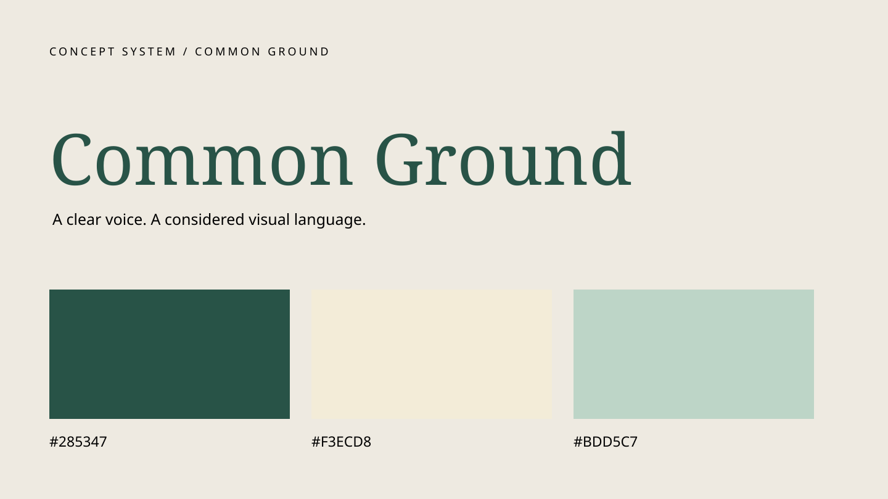
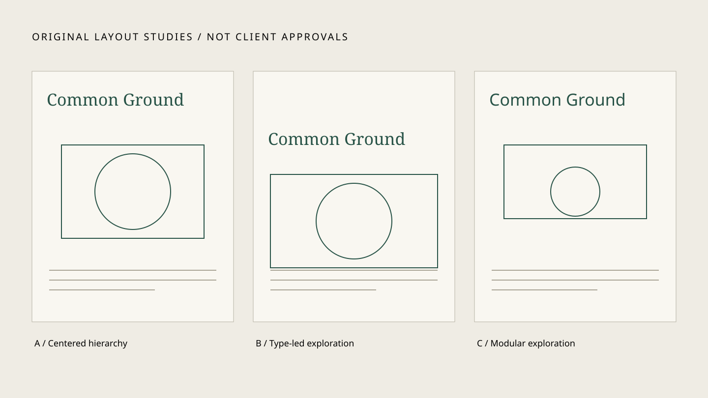

PACKAGING / 2026 / SELF-INITIATED CONCEPT
Common Ground
A coffee identity built around the simple pleasure of company.

- CLIENT / INDUSTRY
- Self-initiated coffee brand
- ROLE
- Independent concept designer
- YEAR
- 2026
- COLLABORATORS
- None / self-initiated
The challenge
Give a neighborhood coffee concept a warm, recognizable presence on a crowded shelf. Independent coffee drinkers; a two-color production limit and one reusable pouch format.
A considered direction
A generous lowercase wordmark, botanical seed symbol and a forest-green label turn the bag into a friendly invitation. Georgia-based concept wordmark, readable sans-serif information hierarchy, forest green and butter, with a centered label grid.
From idea to application
Identity, coffee pouch, wholesale tin, label system and packaging guidelines. Explored stamp-like and typographic directions; retained the readable wordmark. The original SVG artwork records the chosen layout; real printer proofs and rejected sketches remain to be supplied.
An honest outcome
Self-initiated concept study only. No commercial launch, real client endorsement, measured business result or production proof has been supplied. Collaborators: none.


A verified result or approved client perspective belongs here.
No fabricated metrics or praise.